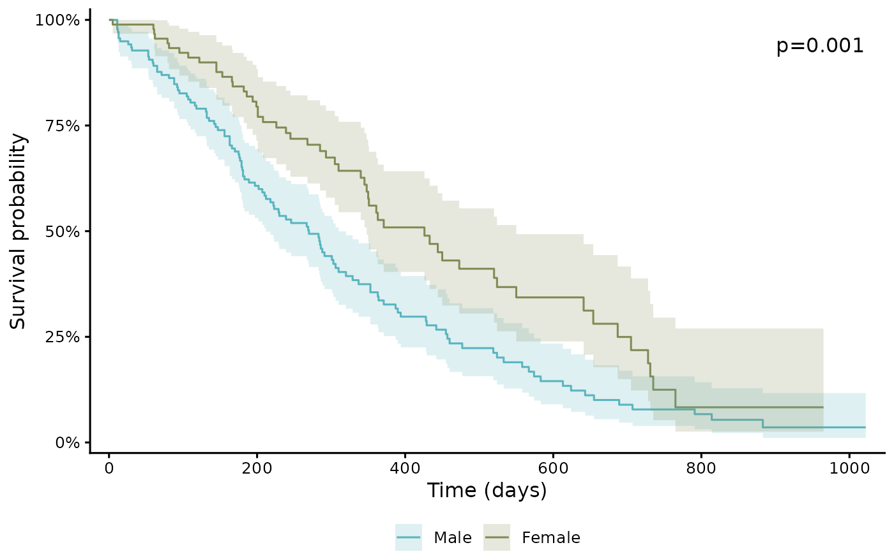

Produces a publication-ready Kaplan-Meier curve with UKB-standard styling,
built on ggsurvfit. Supply the analysis data with a follow-up-time
column and an event-status column (and optionally a grouping column); the
survfit model is fitted internally, so no Surv() object is
required. The interface mirrors assoc_coxph
(time_col / status_col / strata), and the inputs are the
same ones produced by derive_followup and
derive_case.
Usage
plot_survival(
data,
time_col,
status_col,
strata = NULL,
type = c("survival", "risk", "cumhaz"),
add_ci = TRUE,
add_risktable = TRUE,
add_pvalue = TRUE,
add_median = FALSE,
add_censor = FALSE,
xlim = NULL,
ticks_at = NULL,
xlab = NULL,
ylab = NULL,
title = NULL,
theme = "default",
palette = NULL,
legend_labs = NULL,
save = FALSE,
dest = NULL,
save_width = 20,
save_height = NULL
)Arguments
- data
data.frame. Analysis dataset containing
time_col,status_col, and (if used)strata.- time_col
Character. Follow-up-time column (e.g.
"lung_followup_years").- status_col
Character. Event-status column. Accepts
0/1(0 = censored, 1 = event),logical, or1/2(2 = event); it is normalised to 0/1 with a message.- strata
Character or
NULL. Grouping column to compare (e.g. an exposure).NULL(default) draws a single overall curve.- type
Character. Curve type:
"survival"(default, descending survival),"risk"(cumulative incidence, \(1 - S\)), or"cumhaz"(cumulative hazard).- add_ci
Logical. Add a confidence-interval ribbon. Default
TRUE.- add_risktable
Logical. Add a numbers-at-risk table. Default
TRUE.- add_pvalue
Logical. Annotate the log-rank p-value. Default
TRUE; disabled automatically whenstrataisNULL.- add_median
Logical. Add a median-survival reference line at 0.5. Default
FALSE.- add_censor
Logical. Add censoring marks. Default
FALSE.- xlim
Numeric vector of length 2 or
NULL. X-axis limits.- ticks_at
Numeric vector or
NULL. X-axis tick positions.- xlab, ylab, title
Character or
NULL. Axis labels and title.xlabdefaults to"Time";ylabdefaults bytype.- theme
Character. Visual theme preset. Only
"default"is currently supported: a clean classic look with a bottom legend, and it also supplies the colour palette and risk-table styling.- palette
Character vector or
NULL. Colour(s) for the groups (applied to both lines and CI ribbons), overriding the theme palette.NULL(default) uses the theme's palette. A palette is applied only when it has at least one colour per group; if there are more groups than colours, ggsurvfit's default palette is used instead.- legend_labs
Character vector or
NULL. Group legend labels.- save
Logical. Save output to files? Default
FALSE.- dest
Character. Destination path (extension ignored; png / pdf / jpg / tiff are all written). Required when
save = TRUE.- save_width
Numeric. Output width in cm. Default
20.- save_height
Numeric or
NULL. Output height in cm.NULLauto-picks 16 (with a risk table) or 12 (without).
Value
A ggsurvfit/ggplot object, returned invisibly; its
rendering includes a numbers-at-risk table when add_risktable = TRUE.
Display with plot() or by printing.
Details
This is a non-parametric, unadjusted estimate computed directly from
the three columns; it does not use a Cox model or covariates. To visualise
adjusted hazard ratios, use plot_forest on an
assoc_coxph result instead.
ggsurvfit and ggplot2 are used only here and are Suggests;
install them with install.packages(c("ggsurvfit", "ggplot2")).
Examples
if (requireNamespace("ggsurvfit", quietly = TRUE)) {
lung <- survival::lung
lung$sex <- factor(lung$sex, levels = c(1, 2), labels = c("Male", "Female"))
p <- plot_survival(
data = lung,
time_col = "time",
status_col = "status", # 1/2 coding -> auto-normalised
strata = "sex",
xlab = "Time (days)"
)
plot(p)
}
#> status: 1/2 coding detected, converting 2 -> 1 (event), 1 -> 0 (censored).
